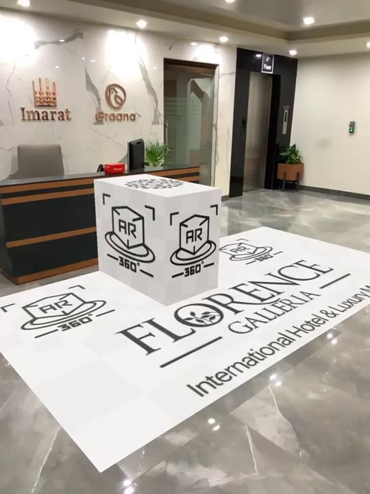

Planning an augmented reality activation for a live event
How to plan an AR activation for a live event: app or web delivery, tracking, venue lighting, network load, device support, staffing and a launch checklist.

Augmented reality looks simple in a pitch video: a guest lifts a phone and a digital object appears in the room. On the day of an event it is a different problem. The guest is standing in a crowd, the venue lights are doing something unexpected, the mobile network is busy, and a person who has never opened your experience before has about ten seconds of patience. At AKS we build AR for events and activations alongside our projection mapping and immersive work, and the projects that go well are the ones planned around the venue and the audience rather than around the technology. This note walks through the decisions that matter, in the order we usually make them.
Start with what the guest should do
Write the guest journey in one sentence before choosing any software. For example: scan a code at the entrance, place a product on the floor, walk around it, take a photo and share it. Every step in that sentence is a place where people drop off, so fewer steps is better. Decide what the experience is for. A product reveal, a wayfinding aid, a photo moment and a game each have different needs for duration, repeat use and tracking quality. An AR piece that tries to be all four usually does none of them well.
Think about the phone as a camera and a screen held at arm's length. Experiences that need two hands, long periods of standing still or constant walking backwards are tiring and risky in a crowd. Short interactions of under a minute, with an obvious reward at the end, suit event conditions best.
App, web or social filter
The first big choice is how guests will reach the experience. A dedicated app gives the most control over performance and features, but asking people to download something at an event is a heavy request, and many will not. Web-based AR runs in the phone browser, opens from a link or a QR code, and removes the install step. Its capabilities depend on the browser and the device, and it is generally less capable than a native app for complex scenes. Social platform filters reach people inside an app they already use and can spread easily, but they come with the platform's rules, size limits and review process.
For most one-day events we lean towards web delivery or a social filter, because the audience is large, casual and unpredictable. A native app makes more sense for a long-running installation, a conference where attendees are asked to install it in advance, or an experience that needs features the browser cannot offer. Whatever you pick, test on the platforms your audience really uses. In our region that means a wide spread of Android devices of very different ages as well as recent iPhones, and the plan should assume the older phones are in the room.
Tracking: what holds the content in place
Tracking is how the phone decides where the digital object sits. The common approaches are these:
- Surface tracking. The phone detects a floor or table and lets the guest place content on it. It needs no printed material, but it needs a surface with some visual texture and reasonable light. Plain polished floors and glossy tables can cause drifting or failed detection.
- Image or marker tracking. The phone recognises a printed image, poster or logo and anchors content to it. This is reliable when the image has good detail and contrast, and it lets you control exactly where the effect appears. Reflections and glare on the printed surface can still break it.
- Spatial or location anchoring. Content is tied to a mapped space or place. It can work over larger areas but needs surveying and testing at the venue, and it is usually the most expensive to produce.
Choose the simplest method that meets the brief. Image tracking with well-designed targets is often the most dependable choice for a crowded event, since it does not rely on the phone finding a good floor.
The venue is part of the technical spec
Visit the venue, or at least study photographs and plans, before design is locked. Phone cameras need steady light. Very dark rooms, flashing lights, moving lasers and strobing screens make tracking unstable and the camera image noisy. Bright direct sun on a screen makes the result hard to see. If your event also includes projection or LED visuals, schedule the AR moments for when the lighting is calm, or place the AR zone away from effects that flicker. Our note on flicker and strobe safety covers a related concern for the audience's own comfort.
Also think about space. A guest placing a large virtual object needs room to step back. A queue of people holding phones up at head height needs more room than a queue of people holding programmes. Mark the AR area clearly, keep it away from stairs, kerbs and moving vehicles, and give staff a way to manage flow.
Network and data: assume it will be crowded
Mobile networks in a dense crowd can be slow even when the signal bars look full. If your experience downloads a large model or a video when the guest opens it, many guests will wait, give up and walk away. Keep the initial download small, load heavier assets only when needed, and compress models and textures sensibly. Ask the venue about Wi-Fi, but do not depend on it: public Wi-Fi at events is often overloaded, and some captive portals interrupt browser-based experiences. Where the experience must work with no connection, an installed app or a pre-cached page is safer. Ask your producer to test on a mobile connection, not on the office fibre line.
If you collect any data, such as email addresses for a prize draw or photos shared back to a gallery, decide what is stored, where, and for how long, and tell guests plainly. Camera access requests are part of the experience, so the wording on that first screen matters.
Content that survives real phones
Content for AR is built to a budget. Phones have limited processing and heat tolerance, and a model that runs well on a developer's new handset may stutter on a three-year-old one. Keep polygon counts and texture sizes modest, avoid heavy transparency and dense particle effects, and use simple lighting that does not fight the camera image. Scale matters: real-world size should be believable, and a character or product that appears at the wrong size breaks the illusion at once. Add a light shadow or contact cue so objects look grounded, and give the guest a clear on-screen hint about what to do next, because most people will not read instructions.
Design for the photo. Many guests will judge the experience by the picture they take, so frame the object well for portrait photos, keep branding legible but not overpowering, and make sure the capture button is easy to find. If the activation connects to a larger show, such as a facade projection or stage visuals, the AR layer should extend the story rather than repeat it. We explore that kind of pairing in our guide to immersive event technology.
People on the day
Technology does not replace staff. Have trained hosts near the entry point who can explain the first step in one sentence, help people with older phones and watch for problems. Prepare a short fallback: a few supplied tablets or a printed alternative for guests whose phones cannot run the experience. Give the team a simple issue sheet covering the usual failures, such as camera permission denied, a target not recognised and a slow load, along with the fix for each. Plan a rehearsal in the real venue at the real time of day, with the lights and sound running as they will on the night.
Launch checklist
| Item | What to confirm |
|---|---|
| Guest journey | One clear sentence, with as few steps as possible |
| Delivery method | App, web or social filter, chosen for the audience and duration |
| Tracking | Method tested on the real surfaces, targets and lighting |
| Devices | Tested on older and lower-cost Android phones as well as recent iPhones |
| Network | Small first download, tested on a mobile connection, offline fallback if needed |
| Venue | AR zone placed away from flicker, glare and hazards, with room to move |
| Privacy | Camera permission wording and any data collection explained plainly |
| Staffing | Trained hosts, a spare device pool and a fix sheet for common faults |
| Rehearsal | Full test in the venue with event lighting and a realistic crowd |
The best AR activations feel effortless to the guest because the planning was thorough on the production side. If you are considering AR for a launch, a brand event or a heritage site, tell us what you want guests to experience through the contact section and we will help you choose the delivery method, the tracking approach and the content scope that fit your venue and audience.
Thinking about AR for your event?
Tell AKS Creative Studio the venue, the audience and the moment you want to create, and we will plan the experience around them.
Start a conversation ↗